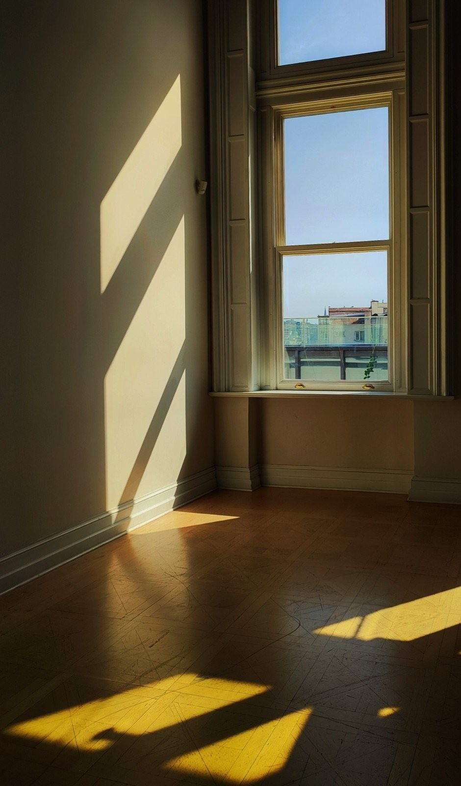
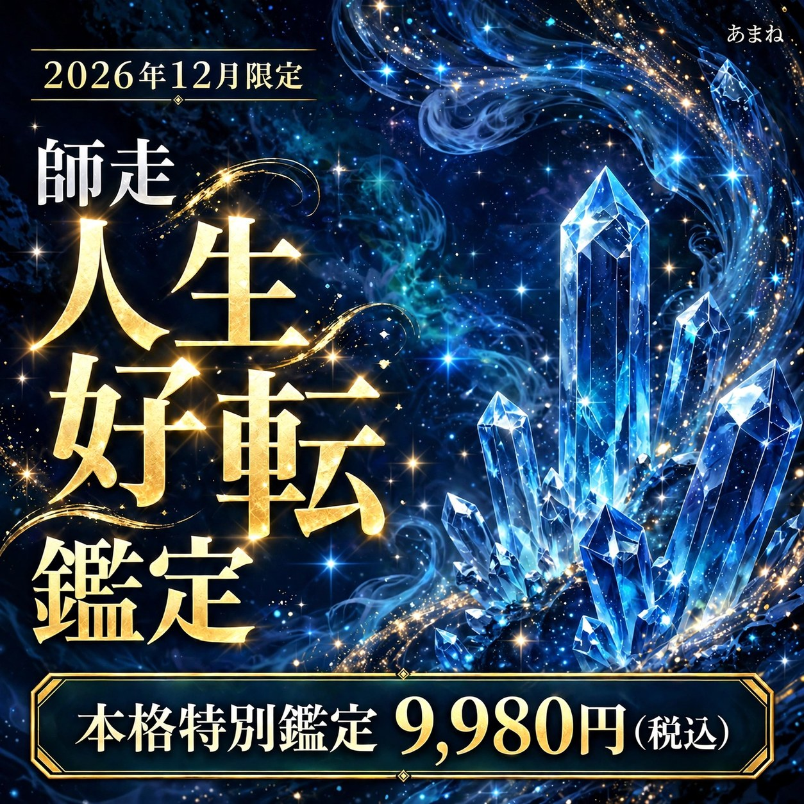
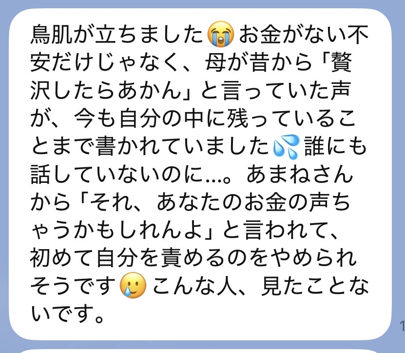
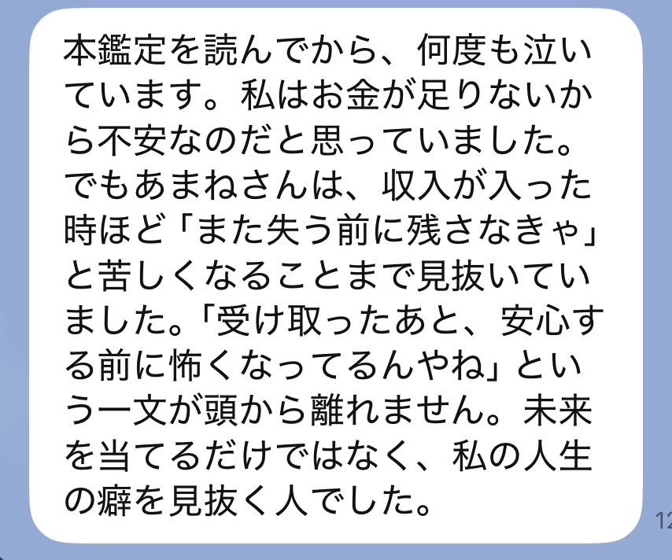
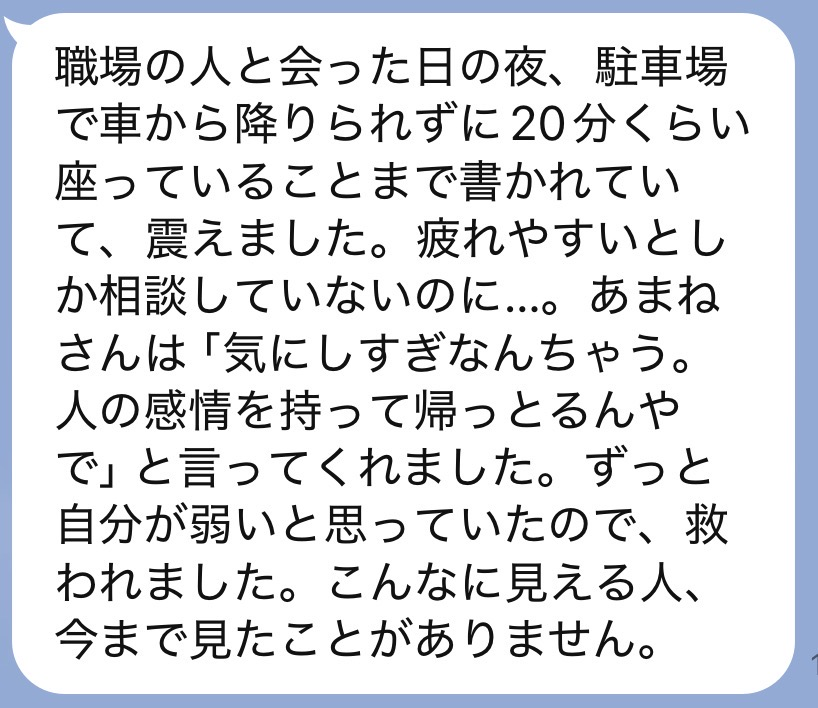
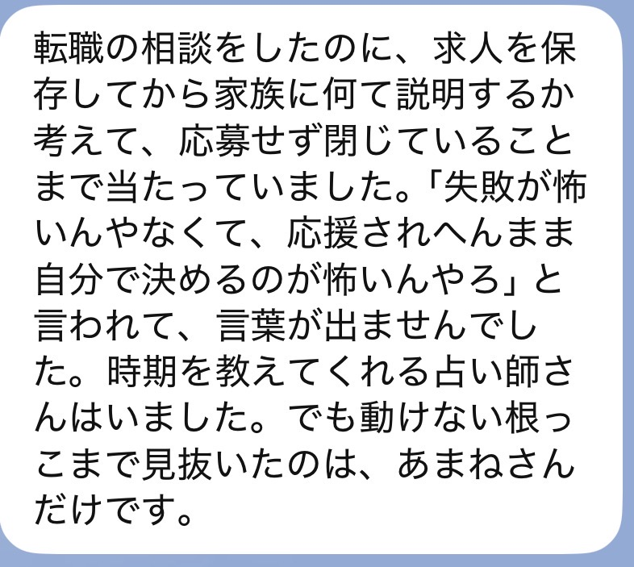
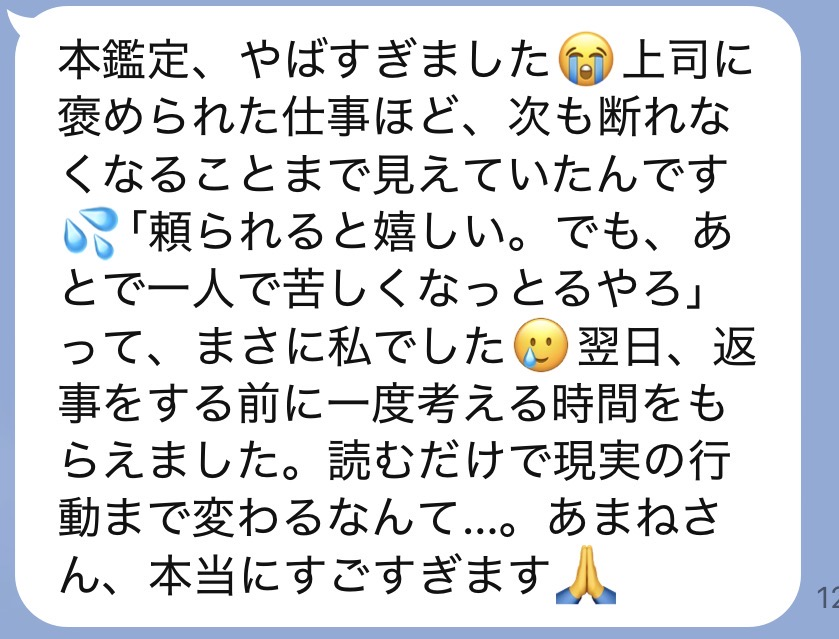
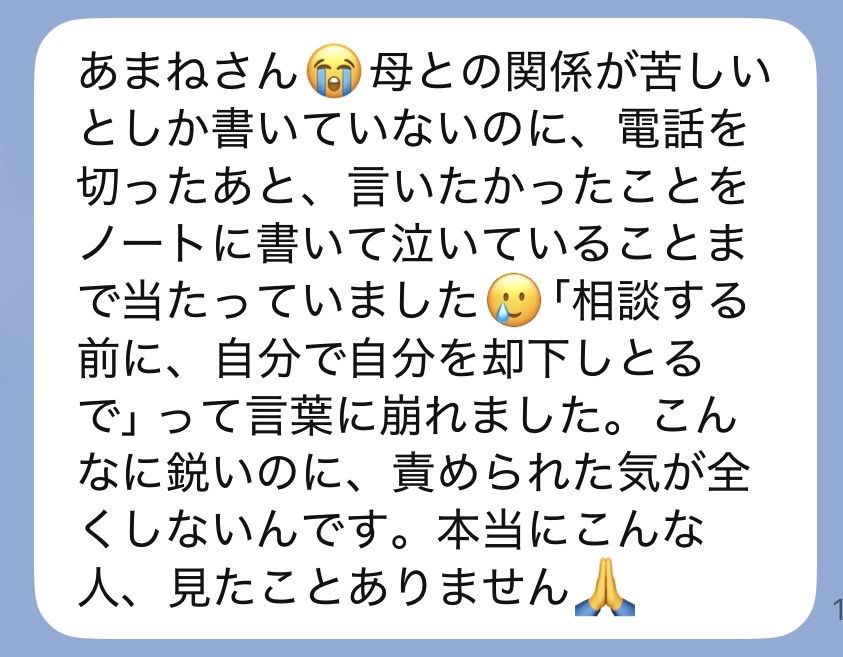
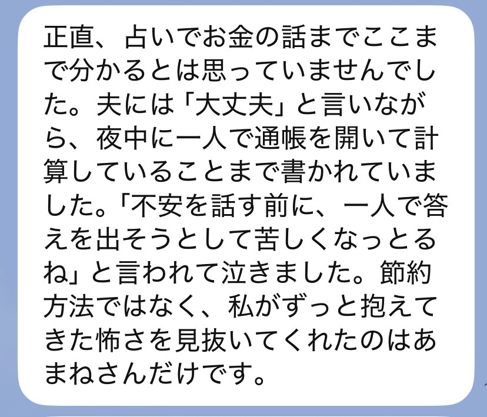

2026年12月の本格特別鑑定
なぜ同じ相手や同じ言葉に振り回されるのか。どこから自分を守ればいいのか。
師走 人生好転鑑定 本格特別鑑定
通常価格 19,900円→9,980円（税込）
寒さが深まる師走。
年末の予定が埋まる前に、
あんた自身の運の流れも
視ておこうな。
たとえば、相手の機嫌を先に読んで、
言いたいことを飲み込む。
家に帰ってまで、あの一言を
何度も思い出してしまう。
仕事も、お金も、恋愛も。
ここにある場面は一例やで。
誰かの言葉に悩んでいなくても、
今のあんたが知りたいことから
全体の流れを視ていくで。
なぜ同じ相手や同じ言葉に
振り回されるのか。
どこから自分を守ればいいのか。
無料鑑定で気になった言葉が
あった人へ。
まだしっくり来てへん人も、
今のご相談を整理するところから
始められるで。
あんたが弱いから、と
決めつけんでええ。
今どんなことが起きていて、
何を感じているのか。
そこから一緒に視ていくで。
もし帰ってからも
相手の言葉を考え続けとるなら、
休むはずの時間まで
渡してしまってるかもしれん。
全部あんたのせいにせず、
どこから守るか、一緒に見つめよか。
恋愛・仕事・お金・家族など、
今のご相談から全体の流れを
見つめます。
無料鑑定では、今の流れと
先に整える一歩をお伝えします。
本鑑定は、その悩みが続く背景や、
これから整える順番・選べる道まで
深める鑑定です。
これはお金や人間関係の結果を
約束するものではなく、
今の自分を理解し、選ぶための
鑑定書です。
毎年、年末が近づくとこう思わへん？
「今年も、何も変わらんかった」
そして年が明けて、また同じことを考える。
その繰り返しに、心当たりがある人は多いはずや。
手放せなかった人間関係。
踏み出せなかった仕事。
言えなかった言葉。
それを抱えたまま年を越すと、来年も同じ重さで始まる。
師走のうちに視ておく意味は、そこや。
年内に整理できるものと、来年へ渡すもの。
その線引きができるのが、この季節だけなんや。
「またお金使って、何も変わらんかったらどうしよ」
うん、その気持ちは正しい。
お金払ってまで視てもらうんは、ちょっと怖いもんな。

迷うんは、弱いからちゃうで。
今の自分に必要な内容か、大切なお金を使ってええか、確かめてな。
急かさへん。
ただ、今届いてるサインを、
日常に埋もれさせんといてほしいだけや。
今の悩みだけでなく、繰り返す理由と、これからの道まで。

ご相談内容を受け取ってから、
今のあなたに合わせて読み解きます。
鑑定結果は約3〜5日で、
公式LINEへメッセージで
お届けします。
鑑定をご案内したLINEに、今気になっていることをそのままお送りください。
9,980円（税込）の本格特別鑑定をお選びください。
決済時のお名前・購入した商品名・
購入完了画面を、
鑑定をご案内したLINEへ
お送りください。
特に知りたいことや、変えていきたいことを確認します。
約3〜5日で、文章の鑑定結果を公式LINEのメッセージでお届けします。
届いたLINEを、そのまま載せとくな。







掲載の感想は、これまでの本鑑定についていただいたものです。今回の12月企画の結果を示すものではありません。
もう、2026年のままでええの？
2027年こそ人生を変えたい人は、
来てな。
あんたの2027年の流れを、
一緒に視ていこうな。
私からの案内は、
今夜と明日の昼で
終わりやで。
今夜、一つだけ
お願いがあるねん。
無料鑑定の文を、
年を越す前に
もう一度だけ
読み返してみてほしい。
あの中で、
胸に引っかかった一行。
そこが、
あんたの本音が
置き去りになっている
場所の入口やと思うで。
その奥を読むのが、
本鑑定やねん。
もちろん、
受け取るかどうかは
あんたが
決めて大丈夫。
でも、
少しでも心が
反応しているなら、
その感覚だけは
無視せんといてほしい。
あんたは、
ずっと誰かの気持ちを
大切にしてきた人やと思う。
だから今夜だけは、
自分の声も
大切にしてあげてな。
あまね